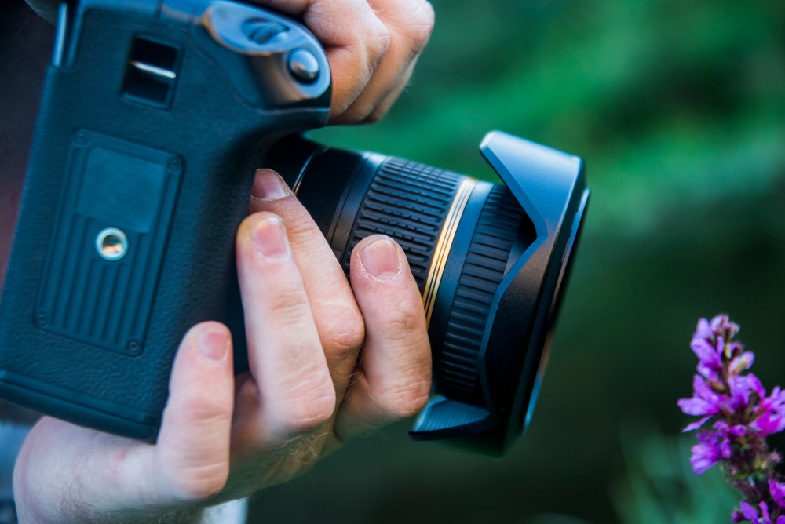

Jie yra nedideli, nesunkiai telpantys į kišenę. Tai yra pirmasis laiptelis po telefono kameros. Šių fotoaparatų nuotraukų kokybė yra šiek tiek geresnė, taip pat jie suteikia daugiau kontrolės, norint pagauti tobulą akimirką. Galima pasirinkti įvairius režimus: naktinėms fotografijoms, portretams arba peizažams. Prieš darant nuotrauką, ją komponuoti, o nufotografavus peržiūrėti galite ant nugarėlės esančiame ekrane. Šie įrenginiai tinka daugumai mėgėjiškų, kasdienių situacijų: kelionėms, šventėms. Jų naudojamas ganėtinai nesudėtingas, kaina taip pat pakankamai „draugiška“ – nuo 50 EUR. Populiariausi gamintojai: Canon, Nikon, Sony, Panasonic.
Hibridiniai fotoaparatai
Šios kameros taip vadinamos, nes kombinuoja kompaktinio fotoaparato ir veidrodinio fotoaparato savybes. Jie yra didesni ir dažnai turi nemažą, nekeičiamą objektyvą. Dėl pastarojo puikių pritraukimo savybių, šis fotoaparatas puikiai tinka nuotraukoms iš toli, pvz.: gamtoje stebint gyvūnus arba keliaujant. Nuotraukos čia taip pat komponuojamos ekrane. Jie yra šiek tiek brangesni, tačiau naudojimas vis dar nesudėtingas. Kainos prasideda nuo maždaug 150 EUR. Populiariausi gamintojai: Canon, Nikon, Sony, Kodak.

Veidrodiniai fotoaparatai
Šie įrenginiai užtikrina geriausios kokybės nuotraukas. Jie vadinami veidrodiniais, nes vaizdas iš objektyvo perduodamas per veidrodžius į akutę, per kurią nuotrauka komponuojama. Žinoma, nuotraukos peržiūrai jie turi ir ekraną nugarėlėje. Šių fotoaparatų kaina ir nuotraukų kokybė yra aukščiausia, todėl kone visi profesionalai naudoja būtent veidrodinius fotoaparatus. Jų valdymas yra gerokai sudėtingesnis, nei „muilinių“, nors taip pat galima naudoti ir automatinį parametrų nustatymą. Šių fotoaparatų objektyvus taip pat galima keisti – pasirinkti tinkamiausią esamai situacijai. Pigiausi veidrodiniai fotoaparatai kainuoja apie 350 EUR. Populiariausi gamintojai: Nikon ir Canon.
Sisteminiai fotoaparatai
Trumpiau – (MILC – mirrorless interchangeable lens camera (liet. beveidrodinis fotoaparatas keičiamais objektyvais)) – šie fotoaparatai kokybe prilygsta veidrodiniams, tačiau yra mažesni, nes fotoaparate nėra veidrodžio. Objektyvus galima keisti, tik reikia turėti omenyje, kad vieno gamintojo objektyvai tiks tik to paties gamintojo fotoaparatams, pvz.: Sony objektyvo negalėsite uždėti ant Pentax fotoaparato, be specialaus adapterio. Prieš fotografuojant, vaizdas matomas ekrane ant nugarėlės. Šių fotoaparatų valdymas yra sudėtingesnis, tačiau leidžia pasirinkti tinkamiausius nustatymus pagal situaciją. Kaina taip pat yra aukštesnė, tačiau nuotraukų kokybė tai atperka. Jų kainos prasideda nuo apytiksliai 300 EUR. Populiariausi gamintojai: Sony, Pentax, Fujifilm, Canon.
